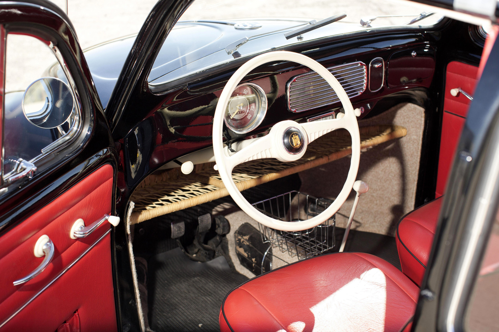
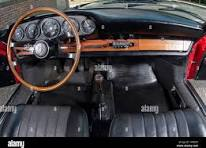

Coches Destacados
VW Beetle (1938)

Cuando el primer Beetle salió de la línea de producción, se llamaba simplemente Volkswagen, "el auto del pueblo", pero su forma distintiva inspiró apodos en todo el mundo: Beetle, Käfer, Vocho, Coccinelle, Fusca o Maggiolino. La producción en serial comenzó en 1945 y se vendieron 21,5 millones de automóvil de primera generación, lo que lo convierte en el automóvil más popular fabricado en una sola plataforma de todos los tiempos.
El Beetle fue una obra maestra de la innovación y la economía: era compacto, pero práctico, además de asequible y económico de mantener. El exterior curvo del auto no solo le daba un aspecto innovador, sino que también era aerodinámico. La tracción trasera y su pequeñez contribuían a brindar excelente maniobrabilidad, sobre todo en comparación con los grandes vehículos estadounidenses de su época, y el innovador motor enfriado por aire requería menos mantenimiento y era fácil de reparar.
Porche 356 (1948)

El Porsche 356 es un automóvil deportivo producido por el fabricante alemán Porsche AG entre 1948 y 1965. Fue el primer automóvil de serie fabricado por la marca, que estaba disponible en carrocerías cupé, cabriolet de cuatro plazas y roadster, con motor trasero montado longitudinalmente sobre un chasis derivado de Volkswagen Tipo 1, el "primitivo" Porsche 356 de 40 CV (29 kW) a las 4000 rpm.
Poco notado en sus inicios, los primeros 356 fueron vendidos principalmente en Austria y Alemania. Desde el primer prototipo en 1948, le tomó a Porsche cerca de dos años para la producción de los primeros 50 automóviles. A principios de los años 1950, habían adquirido cierta fama entre los aficionados en ambos lados del Atlántico por su aerodinámica, su manejo y la excelente calidad de construcción. Era común que sus propietarios puedan disfrutar a plenitud en la pista del autódromo y, tras la carrera, regresar a casa conduciéndolo, de esta forma aumentando su éxito y sus pedidos hasta llegar a más de 15 000 unidades en 1964. Cuando su producción terminó en 1965, alrededor de 76 000 unidades se habían construido.
VW Transporter T1 (1950)

El Type 29, como se le conoció inicialmente a nivel interno, se fabricó en tan solo tres meses. Se usó un chasis de escalera como base y una carrocería de una sola pieza instalado sobre éste. También se emplearon partes mecánicas del Kübelwagen (Type 82) para instalar un motor de cuatro cilindros en la furgoneta y, gracias al uso del túnel de viento, se logró mejorar la aerodinámica con el coeficiente de 0,44, superando el 0,48 del Beetle.
Equipado con un motor bóxer de cuatro cilindros de 1.131 cm3 refrigerado por aire y montado en la parte trasera, el Volkswagen T1 ofrecía 24,5 CV de potencia a 3.300 rpm. Tenía capacidad para hasta ocho pasajeros y las filas de asientos traseras se podían extraer para aumentar el espacio y aprovechar la capacidad de carga de casi 750 kilos.
En 1953, el T1 recibe un nuevo motor de 1.192 cm3 con 30 CV de potencia y solo unas pocas unidades obtuvieron una versión poco común de este motor con 41 CV de potencia en 1959, un propulsor que estuvo muy poco tiempo en producción y del que no se crearon repuestos. Más adelante llegarían nuevos motores, como una versión de 1.5 litros y 42 CV para el Transporter de servicio pesado con hasta 1.000 kilos de capacidad de carga. Y en 1963 aterriza una versión aún más potente de este motor con 52 CV.
Mercedes-Benz 300 SL (1955)
El Mercedes-Benz 300 SL (código de chasis W198) es un automóvil deportivo biplaza producido por el fabricante alemán Mercedes-Benz entre los años 1954 y 1963. Se fabricó inicialmente con carrocería coupé y luego también como descapotable. Algunos consideran al 300 SL uno de los primeros superdeportivos fabricados en la historia.
El 300 SL es conocido por sus distintivas puertas de ala de gaviota y por ser el primer automóvil en montar un motor de gasolina con inyección directa de combustible. La versión "Gullwing" (alas de gaviota) se fabricó desde 1954 hasta 1957.
Tomando en cuenta el éxito que estaba teniendo el 'alas de gaviota' en un mercado tan importante para Mercedes como el norteamericano y ante las peticiones reiteradas de su importador local Max Hoffman, los de Stuttgart comenzaron pronto a desarrollar una versión descapotable con base en el 300 SL.
Trabant 601 (1957)
El Trabant 601 (o serie Trabant P601) fue un modelo de coche de la marca Trabant, fabricado por el productor VEB Sachsenring en las plantas de Zwickau, en Sachsen. Era la tercera generación de dicho modelo, construida entre los periodos más largos de su fabricación, entre los años 1963 y 1990. Como resultado, es el modelo más conocido de Trabant, al cual suele mencionarse únicamente como "el Trabant" o "el Trabi". Durante su prolongada puesta en producción se fabricaron al cierre de sus líneas 2.818.547 Trabant 601, por lo cual se le cataloga como el coche más icónico de Alemania Oriental.
Occidental, el Volkswagen Beetle (o Tipo 1); fue presentado en 1963 el Trabant en la RDA. Su acometida inicial era la de brindar un auto barato pero fiable, y a su vez fácil de reparar y de mantener. Aun así, en el momento de su lanzamiento fue bastante adelantado en muchos aspectos, al contar con tracción delantera, un motor de bajo mantenimiento, una construcción unitaria, carrocería hecha de plásticos compuestos y suspensión independiente en las cuatro ruedas.
Porsche 911 (1964)

El Porsche 911 es un automóvil deportivo de lujo producido por el fabricante alemán Porsche AG, desde 1964. A través de los años, ha pasado por varias regeneraciones. De todas formas, muchas de las características del modelo original se conservan, como su configuración «todo atrás», su carrocería coupé fastback, el motor bóxer de seis cilindros y un interior con configuración 2+2 plazas.
Desde la fundación de Porsche, la empresa solamente fabricaba el modelo Porsche 356 al que posteriormente reemplazó. Aunque fuese un coche notable, lo cierto era que el modelo basado en el proyecto del Volkswagen Tipo 1, comenzaba a demostrar señales de cansancio alrededor del final de los años 1950. Así, en este período y al mismo tiempo que invertía en las futuras líneas 356 B y C, Porsche comenzó el desarrollo de un modelo íntegramente nuevo.
Renault R5 turbo (1980)
El Renault 5 Turbo es un automóvil de turismo del segmento B producido por el fabricante francés Renault entre los años 1980 y 1986. A pesar de su nombre, y al contrario de lo que pudiera parecer, no se trata de una versión del Renault 5 con el añadido de un turbocompresor al motor, como así se había hecho con el Renault 5 Alpine, conocido en España como Renault 5 Copa Turbo. Se diseñó desde cero y mientras que el R5 convencional tenía motor y tracción delantera, el R5 Turbo disponía de un motor central con tracción trasera, pero lo que más llama la atención es su diseño externo, con un ancho de vías mayor, hecho que le valió el apelativo de «culo gordo». Se concibió como un automóvil de carreras y se homologó en la categoría de grupo 4 inicialmente y posteriormente como grupo B, categoría última que dominó las temporadas 1983 y 1986 del Campeonato del Mundo de Rally.2
El R5 Turbo disponía de un motor Cléon-Fonte de 1397 cc con turbo montado en el centro del coche a efectos de distribución de peso. Contaba con tracción trasera y desarrollaba una potencia de 160 CV (118 kilovatios) a 6000 rpm y 221 Nm (22,5 kgm; 163 lb-pie) a 3250 rpm de par motor máximo, con una caja de cambios de cinco velocidades, que alcanzaba una velocidad punta de 218 km/h (135 millas por hora) y una aceleración de 0 a 100 km/h (62 millas por hora) en 7,7 segundos, haciéndolo diferente respecto al R5 convencional en su aspecto externo con unos pasos de rueda muy anchos (60 cm (23,6 pulgadas) añadidos) que además de darle un aspecto agresivo, le permitía insuflar más aire al motor. Su bajo peso se debía al habitáculo sencillo y con las puertas, capó y cola fabricados en aluminio. Para competir en rally se le dispuso de una suspensión dura, grandes frenos de disco y neumáticos muy inflados. Su éxito en rallies se debía a su facilidad de manejo, su buen agarre y al motor de grandes prestaciones. En cambio, en su interior era muy ruidoso, lo que incomodaba a sus ocupantes.
Audi Quattro (1980)
Hace 40 años, en el Salón de Ginebra, Audi desvelaba el mítico Audi quattro, su primer deportivo de serie con tracción a las cuatro ruedas. También fue el segundo coupé de la historia en incorporar esta tecnología: el camino lo abrió el Jensen FF en 1966. Y es que, salvo contadas excepciones, este sistema había sido patrimonio esencialmente de vehículos todoterreno o industriales.
Pero, además, supuso un antes y un después para Audi por ser el encargado de abrir la puerta a la tracción integral quattro, que ya es una seña de identidad de la firma de Ingolstadt. A lo que se suman sus éxitos cosechados en competición, a la que estuvo profundamente ligado desde su nacimiento.
BMW M3 E30 (1985)
El primer M3 fue basado en el Serie E30 que se comercializó en el año 1986 y hasta 2018; cada Serie 3 tuvo su versión M. Desde el E30, BMW ha ido aumentando caballos y cilindros, desde los 4 en línea hasta el E92 con un motor V8. BMW M GmbH anunció en el año 2013 el fin de la producción del M3 Coupé y afirmó que su sucesor será el BMW M4.
Basado en el E30 en 1986 de la BMW Serie 3, el primer M3 fue introducido con un motor de cuatro cilindros en línea S14 de 2302 cm³ (2,3 L; 140,5 plg³), derivado del bloque BMW M10 y la arquitectura de doble (DOHC) árbol de levas en cabeza con 4 válvulas cilindro (16 en total), caja de cambios Getrag 265/5 Sport (la 1.ª hacia atrás).
Renault 4L (1961)
El Renault 4 conllevó la audacia de diseñar un vehículo con una filosofía diametralmente opuesta a la hasta entonces seguida por la firma francesa. Se trataba de un vehículo dotado de una mecánica pionera en Renault, con tracción delantera, suspensión a base de barras de torsión, y refrigeración por sistema de circuito cerrado con vaso de expansión. Todo ello comportaba un diseño de carácter estructural muy diferente al de los Renault 4CV y los Renault Dauphine que a la sazón imperaban en la marca. El equipo de diseño capitaneado por Robert Barthaud realizó un esfuerzo considerable para establecer un nuevo concepto de automóvil, apremiado además por la necesidad de alcanzar un ajustado precio de venta, dado el mercado al cual se destinaba. La solución tenía que superar al Citroën 2CV, cuyo éxito era notorio en aquellas fechas.
El 28 de agosto de 1961 fue presentado a la prensa francesa y apareció en el mercado con el Salón de Fráncfort. Con posterioridad, doscientos R4 blancos desfilaron delante la torre Eiffel. En marzo de 1964, se celebraron las 500 000 unidades. En febrero de 1966, el primer millón. En diciembre de 1977, cinco millones. En 1986, ya se habían fabricado unos siete millones y medio. Los últimos puntos de fabricación fueron Colombia (donde se fabricaba localmente, y ante la alta demanda se decide importar CKD yugoslavo para completar la producción) y Eslovenia, anteriormente parte de Yugoslavia.
BMW 507 (1955)
El 507 surgió de la mente de Max Hoffman (un importador de BMW en Estados Unidos), y representó el resurgir de la marca tras los graves daños causados por la Segunda Guerra Mundial. Hoffman fue capaz de convencer a BMW para fabricar un deportivo que mostrase al mundo sus capacidades, un rival adecuado para el Mercedes-Benz 300 SL. El resultado de este desafío fue el exclusivo 507, que fue presentado al público en el Salón del Automóvil de Nueva York de 1955, aunque su producción comenzaría al año siguiente.
La carrocería del BMW 507 fue diseñada por el conde Albrecht von Goertz, que dibujó las elegantes líneas de un roadster con dos puertas y dos plazas. La carrocería del 507 estaba fabricada íntegramente en aluminio, lo que permitía que el peso del coche se mantuviese en unas cifras adecuadas.
El motor elegido para el 507 fue un V8 de 3200 cc, una versión potenciada y aumentada en cilindrada del motor usado en el sedán 502. El motor del 507 estaba alimentado por dos carburadores de doble cuerpo y proporcionaba 150 caballos de potencia. Estaba asociado a una caja de cambios ZF de cuatro velocidades y gracias a la buena relación peso/potencia del vehículo, la velocidad máxima alcanzaba los 217 km/h, mientras que la aceleración de 0 a 100 km/h se quedaba en 8,8 segundos.
Ferrari 250 GTO (1962)

Se presentó a los medios de comunicación durante la conferencia de prensa anual de Ferrari, el 24 de febrero de 1962. Giancarlo Baghetti fue el encargado de probarlo en el Autodromo Nazionale di Monza, donde demostró ser muy rápido. Ninguno de los 36 fabricados de 1962 a 1964 era idéntico a otro, ya que el coche evolucionaba constantemente. Los primeros 18 ejemplares tenían el alerón trasero como elemento separado. Luego, se convirtió en parte integrante del coche.6
Fueron diseñados para competir en la categoría GT. Eran una evolución ortodoxa de los 250 GT SWB. Se le atribuye el inicio del proyecto de diseño a principios de los años 1960 a Giotto Bizzarrini, quien era ingeniero en jefe en aquel entonces. Bizzarrini Tomó el chasis del 250 GT SWB y lo acopló con un V12 Colombo Tipo 168 Comp/62 de 2953 cm³ (3 L; 180,2 plg³) del Ferrari 250 Testa Rossa. Sucesivamente, debido a problemas y desacuerdos internos con Enzo Ferrari, Bizzarrini y otros ingenieros dejaron la casa, por lo que el desarrollo y terminación del proyecto fue encargado al ingeniero Mauro Forghieri y al diseñador Sergio Scaglietti. La carrocería era más ancha fue perfeccionada en las pruebas en el túnel de viento y la pista.
VW Golf MK1 (1974)/Golf GTI (1976)
El primer Golf (nomenclatura interna tipo 17) comenzó su ciclo de producción en 1974. Sin embargo, para los Estados Unidos y Canadá fue conocido como Volkswagen Rabbit; y en México como Volkswagen Caribe1. Su construcción monocasco albergaba un motor de cuatro cilindros en línea enfriado por agua en forma transversal en la parte delantera, aunado a una suspensión McPherson, que le confirieron al Golf confort de marcha y buena estabilidad en curvas. La revista australiana Wheels le otorgó el reconocimiento de “Car of the Year” en 1975. El Golf fue desarrollado por el diseñador italiano de automóviles Giorgetto Giugiaro, del estudio de diseño Italdesign. Giugiaro también había diseñado el Alfa Romeo Alfasud y el Lotus Esprit Mk1. Su nombre es una abreviación de Golf-Strom, que sería la voz en alemán de “corriente del golfo”, corriente oceánica que refleja su carácter internacional.
En 1976 ocurrió otro hecho muy importante en la consolidación del Golf como la referencia en su segmento: La introducción del Volkswagen Golf GTI. El Golf GTI representa la opción deportiva del Golf a un bajo costo; su motor está en esta ocasión alimentado por una inyección mecánica de combustible Bosch K-Jetronic y la transmisión manual de 4 velocidades, fue sustituida en los años 80 por una de 5 velocidades. Las siglas GTI significan Gran Turismo Injection2. Al tener el Golf GTI un peso de tan solo 810 kg (1786 libras), con una potencia de 110 CV (81 kilovatios). El desempeño fue espectacular para un automóvil de su categoría con una aceleración de 0 a 100 km/h (62 millas por hora) en 9,2 segundos y una velocidad máxima de 182 km/h (113 millas por hora). Esto convirtió al Golf GTI en un éxito rotundo e instantáneo, impulsando a otras marcas a desarrollar modelos semejantes creando la categoría de los Hot Hatches, que se refieren a automóviles compactos con cierta orientación deportiva y gran potencia relativamente para su tamaño.
Mini Cooper (1959)

Proyectado bajo el nombre de ADO15 (Oficina de Dibujo del Austin 15), los primeros modelos fueron publicitados en Inglaterra con los nombres Austin Siete (a menudo escritos como SE7EN) y Morris Mini-Menor. A partir de 1962 aparecieron como Austin 850 y Morris 850 en algunos mercados de exportación. El modelo de producción difería del prototipo original (cariñosamente nombrado "La Caja Naranja" debido a su color) dado que la carrocería del frente estaba modificada; el motor iba montado sobre la misma y el carburador se encontraba montado en la parte trasera. Las modificaciones tenían el objetivo de reducir el desgaste de la caja de cambios.6
El tamaño del motor propuesto originalmente era de 948 cc, igual al de los motores utilizados en el Morris Menor y en el Austin A35. Sin embargo, Leonard Lord, presidente de BMC, pensó que las 90 millas por hora (144,8 km/h) de velocidad máxima eran excesivas y, consecuentemente, redujo el tamaño del motor a 848 cc para obtener una velocidad más conservadora de 72 millas por hora (115,9 km/h). La suspensión de Issigonis implicó el uso de conos de goma como resortes. La tasa de resortes del caucho cambia al ser comprimidos, permitiendo que la suspensión se adapte a las variaciones de peso del automóvil y sus pasajeros. Una suspensión convencional habría requerido un aumento en la altura del diseño. Este diseño único fue adaptado del auto de carreras amateur de Issigonis y construido para Mini por Alex Moulton.
BMW serie 5 E39 (1995)
El desarrollo para el sucesor del E34 comenzó en 1989, y terminó en 1995. El diseño final de Joji Nagashima fue seleccionado en junio de 19921 y más tarde congelado para la producción bajo el nuevo jefe de diseño Chris Bangle.Con la selección del diseño en 1992, comenzó la fase de desarrollo de la serie y tomó 39 meses hasta el inicio de la producción. La patente de diseño nacional alemana se presentó el 20 de abril de 1994, con un prototipo E39.
El E39 fue uno de los primeros vehículos (junto con el E38 Serie 7) en contar con airbags de cortina, que protegen las cabezas de los ocupantes en un impacto lateral. El equipo estándar en los modelos de lanzamiento incluía bolsas de aire frontales y laterales duales, pretensores y limitadores de carga para los cinturones de seguridad delantero, frenos antibloqueo, control de tracción, dirección asistida y aire acondicionado. La navegación por satélite también estaba disponible, inicialmente utilizando mapas en CD-ROM, y luego pasando a mapas en DVD en 2002. Varios modelos estaban disponibles en los niveles de acabado Sports o Executive. Tambien fue catalogada y sigue siendo asi como la mejor berlina del mundo.
BMW Z4 (2002)
En el Salón del Automóvil de París de 2002 BMW presentaba el sustituto del BMW Z3. Se trataba del BMW Z4 Roadster, un modelo completamente nuevo que mantenía la esencia del roadster alemán con su techo de lona y su habitáculo situado en una posición muy retrasada.
Unos años más tarde llegó la versión Coupé, después de haber presentado el Concept Car en el Salón del Automóvil de Francfort de 2005. Con el Roadster y el Coupé ya en el mercado, tan solo hubo que esperar hasta finales de 2005 para ver como el siguiente Z firmado por M salía a la luz.
Era el BMW Z4 M Roadster, el modelo llamado a sustituir al BMW Z3 M Roadster del cual se vendieron ni más ni menos que 15.000 unidades durante su vida en el mercado. La receta que aplicaron era la misma que en el caso del Z3.
Cogieron la base del BMW Z4, el motor del M3 que se vendía en aquella época (el E46) y lo juntaron todo. El resultado era una vez más un roadster de altas prestaciones, un biplaza descapotable de 343 caballos de potencia que hacía las delicias de todo aquel que quisiese emociones fuertes. Tambien fue catalogado el mejor roadster de la historia, titulo que sigue manteniendo en la actualidad
BMW 328 Roadster (1936)
El BMW 328 fue producido en la fábrica de Eisenach (Turingia, Alemania), la cual, después de la Segunda Guerra Mundial, se encontraba en la zona de ocupación rusa, y la fabricación de automóviles en Eisenach seguiría una trayectoria dirigida por el estado hasta la reunificación alemana en 1989. En total se fabricaron 464 unidades del 328 (entre todas las versiones).
Después de la Segunda Guerra Mundial, uno de los 328 Mille Miglia (camuflado como Frazer Nash) y planes técnicos de BMW para el automóvil, fueron tomados de la fábrica bombardeada de BMW por representantes ingleses de las empresas Bristol Aeroplane Company y Frazer Nash. Bristol Cars fue creada para construir automóviles completos, denominados Bristol, y también suministrar motores a Frazer Nash para todos sus automóviles de la posguerra. El primer automóvil de Bristol, el 400, se basó en gran medida en los planes de BMW.
En 2004, el 328 Mille Miglia Touring Coupé se convirtió en el primer automóvil en ganar tanto la Mille Miglia de 1940 como la versión clásica de la carrera que se realiza hoy en día.4
Opel Calibra (1989)
Es un 2+2 plazas con motor delantero transversal, disponible con tracción delantera o a las cuatro ruedas. Su carrocería cupé tiene un coeficiente aerodinámico de 0.26 para el modelo 2.0 de 115 CV (113 HP; 85 kW) ya que tiene la anchura del neumático más delgada que los otros modelos más potentes, los cuales tienen el coeficiente de 0.28. El Calibra se presentó oficialmente en el Salón del Automóvil de Fráncfort de 1989 como sucesor del Opel Manta, que posee motor delantero longitudinal y tracción trasera.
El Calibra se utilizó en el Deutsche Tourenwagen Meisterschaft y en el Campeonato internacional de Turismos, en una versión potenciada a 470 CV (464 HP; 346 kW), llegando a proclamarse campeón de la primera categoría en 1996, con el alemán Manuel Reuter al volante.
Audi A4 (1995)
La primera generación del A4 (código interno: B5) está desarrollada junto a la plataforma del Volkswagen Passat. Se puso a la venta en diciembre de 1994 con carrocería sedán, y en mayo de ese mismo año con carrocería familiar. Estrenó la caja de cambios automática secuencial Tiptronic, emparentada con la del Porsche 911 964.
En el Salón del Automóvil de Fráncfort de 1997 se presentó el rediseño de este modelo, que saldría al mercado en 1998. En el exterior los cambios fueron mínimos.
Jaguar E-Type Series 1 (1961)
El Jaguar E-Type (conocido en Estados Unidos como el Jaguar XK-E) es un automóvil deportivo producido por el fabricante inglés Jaguar Cars entre los años 1961 y 1975. Fue exhibido en el Salón del Automóvil de Ginebra en marzo de 1961. Su buena recepción evocó el lanzamiento realizado en Inglaterra, en 1948, del modelo XK120. Pocas semanas después, hacía acto de presencia en el Salón del Automóvil de Nueva York. Las revistas británicas especializadas en la industria automotriz habían organizado varias pruebas con los prototipos de prelanzamiento.
En su lanzamiento el 15 de marzo de 1961, Enzo Ferrari lo llamó "el automóvil más bello jamás fabricado".5 En 2004, la revista Sports Car International colocó al E-Type en el número uno de su lista de los mejores autos deportivos de la década de 1960. En marzo de 2008, ocupó el primer lugar en la lista en línea de The Daily Telegraph de los "100 autos más hermosos" del mundo de todos los tiempos.
Fue introducido como un Gran Turismo de tracción trasera en la forma de un biplaza "Fixed Head Coupé" (FHC) o como un roadster "Open Two Seater" (OTS). Una versión del cupé con cuatro asientos con una distancia entre ejes alargada, fue presentado varios años más tarde.
Llegó al mercado con la difícil misión de reemplazar a los exitosos XK120, XK140 y XK150 con dos tipos de carrocería: roadster y cupé. Sus líneas fueron una creación del diseñador Malcolm Sayer, quien aprovechó sus amplios conocimientos en aerodinámica, producto de sus exitosas experiencias en aeronáutica, para crear una silueta limpia y aerodinámicamente eficiente. La herencia deportiva de Jaguar moldeó sus deportivos de calle. Está catalogado como uno de los gran turismo británicos más hermosos jamás construidos.
Los modelos de la Serie 1 son por mucho los más valorados, ya que esencialmente caen en dos categorías: aquellos fabricados entre 1961 y 1964, los cuales tenían un motor de seis cilindros de 3781 cm³ (3,8 L; 230,7 plg³) con transmisión syncromesh parcial; y los modelos de 1965 a 1967, los cuales incrementaron el tamaño a un V12 de 5344 cm³ (5,3 L; 326,1 plg³) y par máximo en alrededor de 10%, agregando una transmisión totalmente syncromesh, así como también con asientos reclinables, un alternador en lugar del dínamo, un sistema eléctrico cambiado a negativo, un sistema de servofrenos más fiable y otros accesorios modernos. El estilo no fue cambiado.
Siendo un coche británico fabricado en los años 60, hay a su vez algunos sub tipos raros de la Serie 1, por ejemplo: las primeras 500 unidades tenían pisos planos y cerrojos externos del cofre. Al cierre de la producción de la Serie 1, había un pequeño número de coches fabricados que tenían la excepción de las cubiertas de los faros delanteras suprimidos para disponer de una mejor iluminación. No se sabe exactamente cuántos de estos Serie 1 fueron producidos en total, pero se distribuyeron 1508 roadsters alrededor del mundo en 1967, lo que combinado con el hecho de que estas unidades se fabricaran solamente en los últimos meses de la producción de la Serie 1, lo que significa que estos son la variante con el menor volumen.
El interior del E-Type es el arquetipo del lujo deportivo, con butacas en cuero, volante de madera y un arsenal de instrumentos e interruptores tipo eje de balancín. Los de la Serie 1 contaban con interruptores tipo aeronáuticos a palanca, aunque eran menos prácticos pero muy deportivos. Los 3.8 tenían una consola y un túnel de transmisión en el centro con acabados de aluminio.
La planta motriz del E-Type fue el mismo bloque ya utilizado en los XK: un potente seis cilindros en línea de 3781 cm³ (3,8 L; 230,7 plg³) diseñado durante la Segunda Guerra Mundial, que contaba con motor DOHC, bloque de fundición de hierro y culata de aluminio, alimentado por tres carburadores y una relación de compresión de 9.0:1, producía 265 HP (269 CV; 198 kW) a las 5500 rpm y un par máximo de 283 lb·pie (384 N·m) a las 4000 rpm, que le permitía alcanzar una velocidad máxima de 150 mph (241 km/h) y una aceleración de 0 a 100 km/h (0 a 62 mph) en 6.9 segundos. Las innovaciones técnicas incluían: frenos de disco en las cuatro ruedas, dobles muelles en el eje posterior y la triple raqueta en el limpiaparabrisas.
Como todo motor, tiene su ventajas e inconvenientes. El principal inconveniente del V12 es que es un motor que está compuesto por múltiples elementos, no solamente el motor, sino también los elementos que lo rodean, como los conductos de agua y demás líquidos que necesitan funcionar regularmente. Por el contrario, muchos de estos elementos llegarían a secarse, romperse o estropearse si el coche deja de usarse durante dos años consecutivos aproximadamente, además de otros factores entran en juego. Quien no sepa las minuciosidades de mantenimiento, podría llegar a estropear el motor por el simple hecho de ahorrarle desgaste para conservarlo con el mínimo uso para su posterior venta. Por lo anterior, es un motor que está hecho para usarse, por lo que un uso regular de este unos días al año está bien, asegura un mejor estado del coche y entonces una mejor conservación del mismo. Su protuberante cofre sigue siendo el más impresionante de cualquier coche. La toma de aire sobre el cofre del motor no es un mero adorno. Los E-Type, particularmente los primeros, tendían a recalentarse en climas cálidos.
Seat 600 (1957)
Inicialmente se importaron a España algunas unidades del modelo italiano original, el Fiat 600, pero pronto la fábrica SEAT comenzó la producción propia sobre la base de este modelo, bajo acuerdo con la empresa italiana Fiat. Este modelo fue comprado principalmente por la clase media española, que no podía acceder a vehículos de mayores prestaciones. En 1957 se puso a la venta en España por el precio de aproximadamente 19000 € del año 2018 (65.000 pesetas de la época).
Hacia 1955, año en que se presentó el modelo en el Salón del Automóvil de Ginebra, Carlo Abarth no pensaba que el 600 se convertiría en el modelo más importante de su historia. Este automóvil fue utilizado por Abarth para realizar numerosas preparaciones y desarrollos deportivos hasta 1971. Para trabajar en el desarrollo de los 600 apodados "venenosos", Abarth construyó una nueva planta en Turín, en el 38 del Corse Marche; donde se produjeron automóviles completos y miles de equipos especiales para preparar 600 de serie para la competición.
La comercialización del SEAT 600 disminuyó paulatinamente, por la creciente competencia de modelos de otras marcas más atractivos al consumidor. Por ejemplo, el Renault 5, que llegó a superar las ventas del 600, con una estética más moderna y mejores sistemas de seguridad, se popularizó rápidamente en el mercado europeo. Sin olvidar la llegada del Seat 127, nuevo y flamante modelo de la marca, más moderno y más seguro, rivaliza directamente con el Renault 5.
Citroen 2cv (1948)
El Citroën 2 CV fue un automóvil francés muy económico que comenzó a producirse en 1948 con la intención de motorizar a las clases populares. Su planteamiento, común en la Europa de la posguerra, era similar al del VW Escarabajo en Alemania o el Fiat 500 en Italia. Se caracterizaba por montar un motor de dos cilindros opuestos refrigerado por aire —inicialmente de 375 cm³— y un ingenioso sistema de suspensión que le permitía transitar por caminos en mal estado. Su denominación hacía referencia a la potencia fiscal en Francia, deux chevaux fiscaux (dos caballos fiscales). Se mantuvo en producción hasta 1990.
Una vez finalizada la guerra, se aceleró el proyecto. Walter Becchia terminó de desarrollar un motor de dos cilindros opuestos de 375 cm³ y que, a diferencia del anterior, estaba refrigerado por aire. Su potencia era de 9 CV SAE. Para su construcción, Becchia se inspiró en el motor de la motocicleta de Flaminio Bertoni. La caja de cambios pasó a tener tres marchas y una sobremarcha; lo habitual en los modelos franceses pequeños era tres relaciones, como el Renault Juvaquatre y el Peugeot 202 (aunque el Fiat 500 Topolino de 1936 también incorporaba ya una caja de cambios de cuatro velocidades). Becchia, quien había persuadido a Boulanger de la pertinencia de la modificación, logró idear una de cuatro marchas que ocupaba el mismo espacio y con muy poco coste adicional. También se modificaron los asientos, ahora con marcos de acero tubulares, incluyendo elásticos anulares de goma. En cuanto a la carrocería, Boulanger acabó aceptando que todas sus partes del futuro 2 CV fuesen estampadas, circunstancia que permitía curvaturas como la de los guardabarros traseros y delanteros. La plataforma se reforzó con separadores con planchas inferior y superior de chapa, una suspensión muy flexible y paradójicamente bastante sofisticada,9 interconectada lateralmente, con brazos tirados y muelles helicoidales horizontales —embutidos en un cilindro— en los costados, amortiguadores de fricción en los brazos y batidores de inercia por detrás de las ruedas (inventados por Léon Renault), lo que le confería un impresionante agarre en carretera debido a que los neumáticos siempre permanecen en contacto con el suelo.
Citroen DS (1955)
El DS consiguió avances en las normas automovilísticas tales como la comodidad de conducción, la seguridad y el frenado. Durante su producción en serie, que duró 20 años, Citroën vendió 1,5 millones de unidades de este automóvil. El DS consiguió el tercer puesto en el certamen del Automóvil del Siglo, en el que se reconoció a los diseños automovilísticos con más influencia, y también fue nombrado el coche más bello de la historia por la revista Classic & Sports Car.6
Tras 18 años de desarrollo en secreto como el sucesor del 11 Ligero, el DS 19 fue presentado el 5 de octubre de 1955 en el Salón del Automóvil de París. La apariencia del coche y su ingeniería novedosa, captaron la atención del público y de la industria automovilística esa noche. En los primeros 15 minutos de la presentación, se hicieron 743 pedidos, y al finalizar el primer día ya llegaban a los 12 000.
Lejos de ser solo una tecnología fascinante en busca de un objetivo, los periodistas contemporáneos alabaron efusivamente que el DS conseguía el mejor rendimiento posible en la marcha y la maniobrabilidad para el motor relativamente modesto que montaba.
Lamborghini Miura (1966)
El Lamborghini Miura es un automóvil deportivo producido por la empresa italiana Lamborghini entre 1966 y 1972. Su diseño estaba inspirado en los sport prototipos de la época, como el Ford GT40 y el Ferrari 250 LM. El Miura revolucionó el concepto de automóvil deportivo por sus características técnicas y la radicalidad de su diseño, dando pie al concepto de superdeportivo.
El Miura comenzó como un concepto de chasis de motor central trasero transversal y estructura muy rígida y ultraligera, algo nuevo para automóviles de calle en esos años. Existiendo ya un chasis sin nombre, que había sido expuesto en el Salón del Automóvil de Turín en 1965 (y con gran aceptación), la marca encargó la realización de la carrocería a la empresa Bertone. El encargado final de diseñar el Miura fue Marcello Gandini, un joven diseñador de 25 años que trabajaba para esa empresa. El nombre fue tomado de la tauromaquia: Miura es el nombre de una de las más conocidas ganaderías de toros.
Aston Martin DB5 (1960)
Las diferencias principales entre el DB4 Serie V y el DB5, son: el motor de aluminio, incrementado de 3670 a 3996 cm³ (3,7 a 4 L) (224 a 243,9 plg³); una nueva y robusta transmisión ZF de cinco velocidades, excepto en algunos de los primeros DB5; y tres carburadores tipo SU. Este motor producía 282 HP (286 CV; 210 kW), que era capaz de impulsar el coche hasta las 145 mph (233 km/h). Estaba disponible en la versión de alto rendimiento Vantage del DB4 desde marzo de 1962 y se convirtió en la planta motriz estándar de Aston Martin con el lanzamiento del DB5 en septiembre de 1963.
Aparte de su uso en dichas películas, también apareció en "El Deportista Noble", un episodio de 1964 de la serie de televisión El Santo, que protagonizaba un futuro James Bond, el actor británico Roger Moore. El automóvil en cuestión tenía el chasis original DP/216/1 DB5, con la matrícula BMT 216A, utilizado en Goldfinger. El episodio estuvo filmado antes de esta última, cuando el coche todavía estaba pintado con su color rojo oscuro original. El chasis DP/216/1 DB5 también apareció en la película de 1981 The Cannonball Run, en la que el propietario era otra vez Roger Moore, aunque no iba al volante durante su interpretación del agente Bond. Desde su aparición en Goldfinger, al coche se le habían quitado los aditamentos especiales y aparece con su número de inscripción nuevo: 6633PP, replicando dichos aditamentos que fueron agregados al coche para la película.
Alfa Romeo 33 Stradale (1967)
El diseño de la carrocería es obra del diseñador italiano Franco Scaglione. Fue fabricada en aluminio, estando llena de voluptuosas curvas y cuenta con unas puertas de ala de mariposa ampliamente acristaladas. Es considerada como uno de los diseños más bonitos jamás realizados e incluso, gran parte de su curvilíneo diseño fue reutilizado en el renovado 8C Competizione.
Su producción se realizó a mano en las instalaciones de Carrozzeria Marazzi en Milán, donde se recibían los vehículos provenientes de Autodelta terminados mecánicamente y listos para el trabajo de carrocería. La producción fue tan artesanal que no existen dos unidades iguales, cuyas principales diferencias son la rejilla frontal, las luces y los conductos de ventilación. La producción total fue muy limitada a solamente 18 unidades, aunque únicamente 13 de estas llegaron a ser entregadas a los clientes. Una unidad quedó en el Museo de Alfa Romeo, mientras que el resto se entregaron sin carrocería a Pininfarina, Bertone e Italdesign para crear los prototipos Bertone Carabo, 33/2 Coupé Speciale, Iguana y Navajo, respectivamente.
Lamborghini Countach (1974)
La palabra ¡Countach! fue la que exclamó Ferruccio Lamborghini cuando vio por primera vez el prototipo del nuevo deportivo en el que estaban trabajando. En dialecto piamontés, la palabra «Countach» es una exclamación de asombro que generalmente es utilizada por los hombres al ver a una mujer hermosa, un piropo sin traducción literal a otros idiomas. Y con este nombre se bautizó al automóvil, rompiendo la tradición de nombrar a los distintos modelos de Lamborghini con nombres relacionados con el mundo de la tauromaquia.
El primer prototipo del Countach fue diseñado por Marcello Gandini y fue presentado en el Salón del Automóvil de Ginebra de 1971,6 tres años antes de iniciarse su fabricación, como Lamborghini Countach LP500. El nombre "LP500" hace referencia a su motorización y posición del motor (Longitudinale Posteriore 5000 cc).
El prototipo inicial Countach LP500, pintado en un llamativo color amarillo causó sensación entre los asistentes. En esta primera unidad, el chasis era de tipo monocasco y mostraba una baja y afilada línea en forma de cuña, con unas pequeñas tomas de refrigeración y unas características puertas de tijera.
Volvo P1800 (1961)

El Volvo P1800 es un automóvil deportivo producido por el fabricante sueco Volvo Cars entre 1961 y 1973. Se trata de un dos puertas para dos pasajeros, con motor delantero y tracción trasera, en versión cupé (1961-73) o shooting brake (1972-73).
El P1800 era más un gran turismo que un deportivo antes de que se mejorara su velocidad punta, haciéndose famoso a través de su aparición como coche principal, conducido por Roger Moore, en la serie de televisión El Santo, emitida entre 1962 y 1969. Ese P1800 había sido diseñado por Pietro Frua y tenía una mecánica derivada del Volvo Amazon 122.
En 1998, el P1800 fue certificado como "el primer vehículo privado con mayor kilometraje conducido por su propietario original en servicio no comercial" — habiendo superado los tres millones de millas, con alrededor de 4 800 000 km (2 982 600 millas) en 2013.
El propietario de un Volvo 1800S de 1966, Irv Gordon, de East Patchogue, Nueva York, Estados Unidos, tiene el Récord Guinness de mayor kilometraje de un mismo vehículo, el Volvo 1800S que ha conducido desde 1966. 42 000 km (26 100 millas) de estos los ha rodado fuera de Estados Unidos, en Canadá y México, así como en Europa. "En Suecia, llegamos hasta la sede mundial de Volvo para ver dónde había nacido el P1800", comenta Gordon.
Ferrari F40 (1987)
El Ferrari F40 fue un modelo desarrollado para su uso en carretera abierta, pero con especificaciones cercanas a un automóvil de competición. Su austeridad, el nivel de exigencia que imprime a sus pilotos y su excelente comportamiento dan prueba de ello.
Enzo Ferrari ya era consciente de que se acercaba el fin de su vida, a los 90 años. Estaba enfadado, porque el dominio de Ferrari en las competiciones del motor en todo el mundo había desfallecido con el paso de los años. Él mismo pidió a la empresa el desarrollo de un automóvil que hiciera saber a todo el mundo la capacidad que tenían en Maranello para hacer coches competitivos; y para rivalizar contra el Porsche 959 y convertirse en el orgullo de la marca.
El desarrollo técnico corrió a cargo de Nicola Materazzi y aunque su chasis sigue siendo el clásico tubular de acero, fue el primer Ferrari que añadió refuerzos de materiales compuestos. La carrocería fue diseñada por Leonardo Fioravanti que en ese momento trabajaba para Pininfarina. Fue realizada con kevlar, fibra de carbono, aluminio y nomex para conseguir resistencia y poco peso. Gracias al túnel del viento de la compañía italiana, se consiguió una gran estabilidad en ambos trenes a alta velocidad. A pesar de disponer de un gran alerón trasero y no tener los bajos carenados, el F40 consiguió un Cx de 0.34 en penetración aerodinámica. Su cristal trasero que deja ver su motor y con branquias para la ventilación, es una de las señas de identidad que han continuado en la estirpe de deportivos Ferrari.
Es impulsado por un motor V8 de gasolina de 2936 cm³ (2,9 L; 179,2 plg³) con cuatro válvulas por cilindro, en el que gran parte de la puesta a punto, basado en el bloque del 288 GTO, se realizó en los prototipos conocidos como 288 Evoluzione. Testigo de su época, este disponía de dobles turbocompresores IHI con intercoolers. Técnicamente es un automóvil muy radical, ya que no dispone de ABS ni servofreno, además de que no existe sincronización en las marchas, ni dirección asistida ni ningún otro tipo de ayuda electrónica.
Su producción finalizó en 1992 y en 1995 fue sustituido por el F50, que hasta que una nueva generación de la fábrica respaldara los coches de GT1 que vinieron, se mantuvo competitivo.
Se fabricaron un total de 1311 unidades. La última serie, dotada de convertidor catalítico y sistema electrónico de calibrado y ajuste de suspensión, es la menos cotizada por restar pureza al concepto inicial del coche.
Gracias a la ligereza de su conjunto con 1100 kg (2425 libras), alcanza una velocidad máxima de 324 km/h (201 mph), y acelera de 0 a 100 km/h (62 mph) en 4.1 segundos, pero quizás una de las marcas más representativas del potencial del coche, sean los 20.9 segundos que tarda en recorrer 1 kilómetro (0,62 milla).
Peugeot 205 GTI/Rallye (1983)
GTI:
Rallye:
La idea del 205 empezó en 1978, cuando Peugeot compró la marca Simca, que tenía la experiencia necesaria en hacer vehículos pequeños. Los primeros 205 franceses usaban el motor Douvrin DU del antiguo Peugeot 104, a pesar de que después estos fueran reemplazados por los nuevos motores XU y TU, diseñados por PSA.
Peugeot compitió durante los años 80 en el campeonato del mundo de rally con una versión de rally del 205 homologada como Grupo B al que llamó 205 Turbo 16. Disputó solamente tres temporadas y logró 16 victorias y cuatro títulos: dos de pilotos - Timo Salonen y Juha Kankkunen - y dos de constructores. Tras la prohibición de los grupos B, la marca destinó el 205 al Rally Dakar donde de nuevo logró buenos resultados venciendo en 1987 y 1988 y posteriormente en una versión camuflada bajo la carrocería del Peugeot 405, al que llamaron Peugeot 405 Turbo 16. Los pilotos que lo pilotaron fueron Ari Vatanen, que ganó en 1987, 1989 y 1990, y Juha Kankkunen, haciendo lo mismo en 1988. También fue usado en la mítica carrera de montaña la Pikes Peak International Hill Climb.
El Peugeot 205 GTI fue seleccionado entre 50 coches como el mejor hatchback deportivo de todos los tiempos.
El 205 fue el segundo Peugeot más fabricado, después del Peugeot 206 con producción en varios sitios (Mulhouse, Sochaux, Poissy y Madrid), alcanzando incluso la cifra de 2500 coches al día, cuando la demanda así lo exigía. En 1991 Peugeot intentó reemplazar al 205 por un modelo más pequeño y económico: el Peugeot 106; pero, aunque este modelo se vendió muy bien, la gente seguía comprando el Peugeot 205. Finalmente, en 1999 fue sustituido por el Peugeot 206. Cuando finalizó la producción el 31 de enero de 1999, se habían fabricado 5.278.000 unidades.
© 2024 Top 30 Coches Alemanes